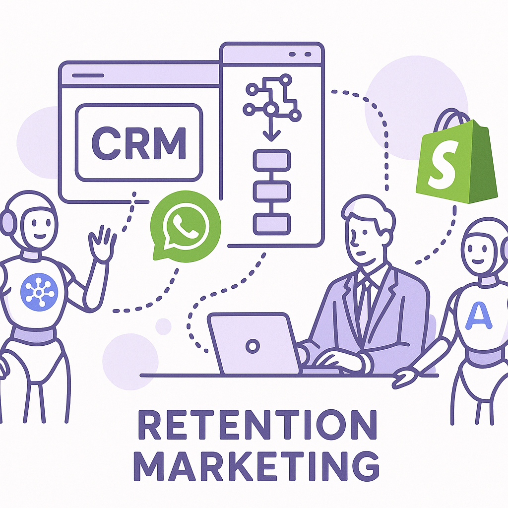
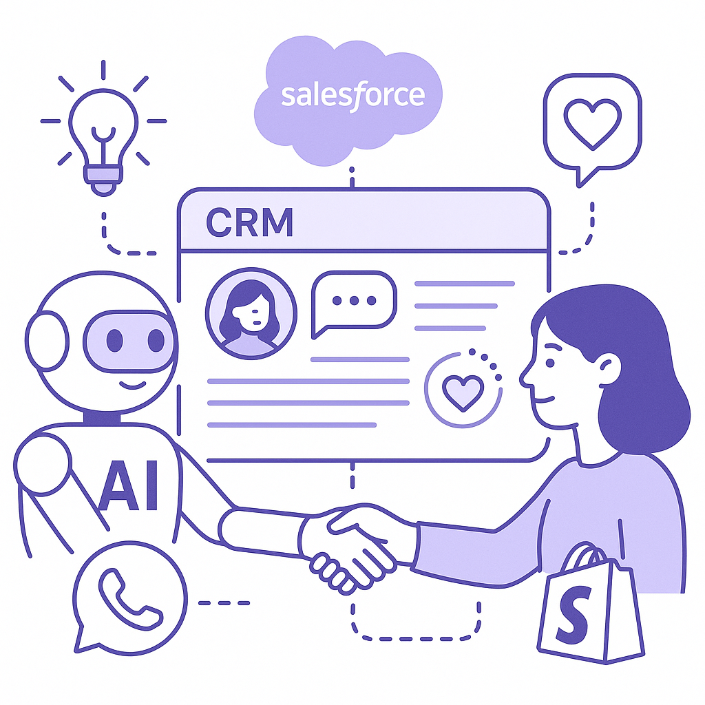
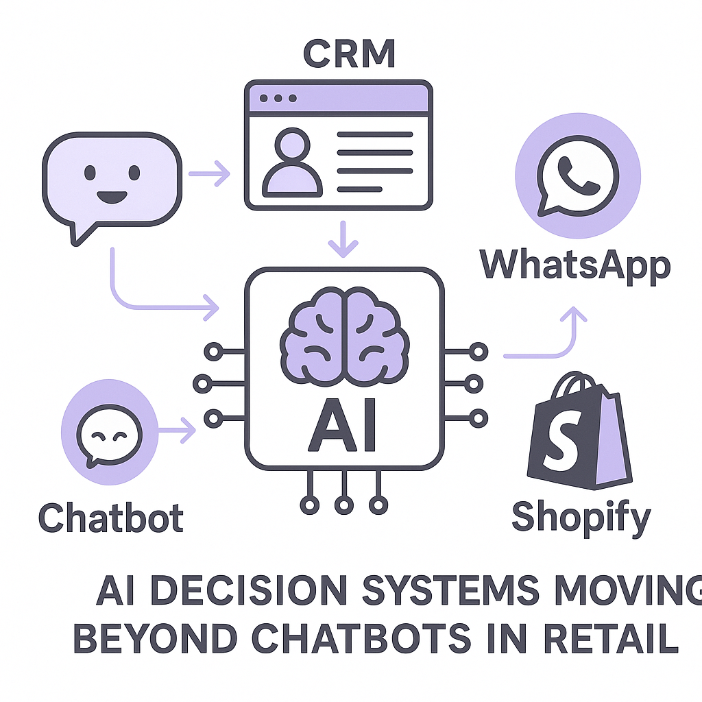

Publishing Recommendation
reviseSeveral drafts contain exaggerated language and lack precise evidence for claims made, especially regarding AI's impact and capabilities.
Today's posts feature promising trends in AI and digital marketing, but some drafts overstate the capabilities and impact of new technologies. The content needs more evidence and clarity to align with our practical and insightful brand voice. Revise to ensure claims are precise and backed by data, avoiding hyperbole.
LinkedIn Posts (10)
1. Meta's Muse Glimmer Open-Source Model ★ Purands solution · high priority
CTA: How do you see open-source models changing retention strategies?

⬇ Download image{kind=link}
Image prompt · flat-vector
Caption: Muse Glimmer in retention marketing.
Alternative hooks
- Meta's Muse Glimmer is now an open-source powerhouse.
- Could Muse Glimmer redefine APAC's AI landscape?
- How Muse Glimmer boosts AI agents in retention marketing.
Research behind this post (sources, summaries & confidence)
Meta returns to open source with Muse Glimmer, an Apache 2.0 licensed 30B parameter AI model optimized for agents conf 0.80 · AI industry
Meta's open-source model could lower barriers for APAC companies to implement advanced AI agents in retention marketing, enhancing customer engagement through personalized interactions.
Sources & what I took from each
- Meta launches Muse Glimmer, a 30B parameter AI model.: The VentureBeat source confirms Meta's return to open source with the launch of the 30B parameter Muse Glimmer. ↗ read source
Original trend links
Risks / caveats
- Open-source models can be misused if not properly managed, potentially leading to security concerns.
- The effectiveness of the model in APAC specifically is assumed but not demonstrated.
2. OpenAI launches GPT-5.6-Cyber with reduced refusals, 95% completion on advanced cybersecurity tasks ★ Purands solution · high priority
CTA: How do you see AI changing your approach to customer data security?
Alternative hooks
- Cybersecurity is not just an IT issue anymore; it's a marketing one too.
- As AI applications grow, so does the need for robust data protection.
- Enter GPT-5.6-Cyber from OpenAI, boasting a 95% completion rate on cybersecurity tasks.
Research behind this post (sources, summaries & confidence)
OpenAI launches GPT-5.6-Cyber with reduced refusals, 95% completion on advanced cybersecurity tasks conf 0.70 · AI industry
OpenAI's launch of GPT-5.6-Cyber is crucial as it addresses the growing need for cybersecurity in AI applications, particularly in APAC where digital transformation is rapid. The model's capabilities could enhance retention marketing platforms' security, a top concern for brands handling sensitive customer data.
Sources & what I took from each
- OpenAI launched GPT-5.6-Cyber.: The source from VentureBeat reports on the launch of GPT-5.6-Cyber by OpenAI. ↗ read source
Original trend links
Risks / caveats
- Over-reliance on AI for cybersecurity can lead to vulnerabilities if models are not properly updated or managed.
- The 95% completion claim needs independent verification as it is a high benchmark.
3. Salesforce rolls out new Slackbot AI agent ★ Purands solution · high priority
CTA: How could integrating Slackbot and Purands AI agents impact your CRM strategy?

⬇ Download image{kind=link}
Image prompt · flat-vector
Caption: Seamless AI integration in CRM.
Alternative hooks
- Salesforce's Slackbot AI agent just hit the scene.
- Ever wonder how AI can elevate your CRM game?
- The key to better retention might already be in your toolkit.
Research behind this post (sources, summaries & confidence)
Salesforce rolls out new Slackbot AI agent conf 0.70 · CRM strategy and lifecycle messaging
Salesforce's new Slackbot AI agent can streamline CRM operations and enhance lifecycle messaging, which is key for retention marketing strategies in APAC's dynamic market.
Sources & what I took from each
- Salesforce launches Slackbot AI agent.: VentureBeat covers Salesforce's release of its Slackbot AI agent. ↗ read source
Original trend links
Risks / caveats
- Integration challenges with existing CRM systems could limit effectiveness.
- Regional variations in communication preferences may affect adoption.
4. WhatsApp commerce agent integration with n8n in APAC ★ Purands solution · high priority
CTA: How is your business leveraging WhatsApp for customer retention?
Alternative hooks
- In APAC's mobile-first market, effective customer communication isn't just an asset - it's a necessity.
- Imagine automating abandoned-cart reminders directly through WhatsApp.
- WhatsApp commerce agents are transforming customer retention strategies in APAC.
Research behind this post (sources, summaries & confidence)
WhatsApp commerce agent for n8n (Nuvemshop + Correios + Z-API) + Next.js management panel conf 0.60 · WhatsApp commerce
The integration of WhatsApp commerce agents into n8n workflows is vital for APAC's mobile-first market, allowing brands to automate customer interactions and improve retention through effective communication channels.
Sources & what I took from each
- WhatsApp commerce agent integration with n8n exists.: The GitHub repository provides tools for integrating WhatsApp commerce agents with n8n and other platforms. ↗ read source
Original trend links
Risks / caveats
- The trend's impact on APAC is assumed and not backed by specific regional data.
- Integration complexity could limit widespread adoption without substantial technical support.
5. Retail's AI advantage won't come from chatbots ★ Purands solution · high priority
CTA: How is your business adapting to the shift in retail AI?

⬇ Download image{kind=link}
Image prompt · flat-vector
Caption: Beyond chatbots: AI decision systems.
Alternative hooks
- Retail AI is moving beyond chatbots.
- In APAC, retail is evolving past chatbots.
- Chatbots have had their day in retail AI.
Research behind this post (sources, summaries & confidence)
Retail's AI advantage won't come from chatbots conf 0.60 · AI industry
The shift towards connected decisions rather than simple chatbot implementations in retail AI suggests a new direction for retention strategies, especially relevant in APAC's evolving retail landscape.
Sources & what I took from each
- Retail AI is moving beyond chatbots.: Retail Dive discusses the evolution of AI in retail towards more integrated decision-making systems. ↗ read source
Original trend links
Risks / caveats
- The shift may not be rapid or uniform across all retail sectors.
- The impact on APAC's specific retail dynamics is not detailed.
6. Shopify Loyalty App Developments ★ Purands solution · high priority
CTA: How have you seen loyalty programs impact retention in your experience?
{kind=link}
Image prompt · flat-vector
Caption: Enhancing loyalty programs with AI.
Alternative hooks
- Shopify's loyalty app evolution is a game-changer for APAC brands.
- What's brewing in Shopify's loyalty apps can redefine customer retention.
- APAC brands, take note: Shopify loyalty apps are evolving fast.
Research behind this post (sources, summaries & confidence)
Shopify Loyalty App Developments conf 0.50 · Shopify ecosystem
New developments in Shopify loyalty apps, like Smile.io-style features, are crucial for APAC brands looking to enhance customer retention through tailored loyalty programs.
Sources & what I took from each
- New loyalty apps are being developed for Shopify.: The GitHub repositories show active development of Shopify loyalty apps. ↗ read source
- Additional loyalty app development.: Another GitHub repository demonstrates ongoing work on loyalty and referral features. ↗ read source
Original trend links
Risks / caveats
- The impact on APAC brands is speculative without specific regional adoption data.
- The apps' success depends on market adoption, which is not guaranteed.
7. YouTube requires creators to have more watch hours for monetization
CTA: What strategies do you think will help creators meet these new watch hour requirements?
Alternative hooks
- Recently, YouTube raised the bar for monetization.
- A new challenge for creators: more watch hours required.
- YouTube's monetization changes could reshape APAC content.
Research behind this post (sources, summaries & confidence)
YouTube requires creators to have more watch hours for monetization conf 0.80 · SaaS
Changes in YouTube's monetization policy could impact content-driven retention strategies in APAC, where digital content consumption is high.
Sources & what I took from each
- YouTube increases watch hours required for monetization.: The Verge article confirms changes to YouTube's monetization requirements. ↗ read source
Original trend links
Risks / caveats
- The changes may discourage smaller creators, impacting diversity in content.
- The specific impact on APAC's creator economy needs further examination.
8. OpenAI completes $7 billion employee tender offer
CTA: How do you think financial strategies like this one will shape the AI industry?
Alternative hooks
- OpenAI just made a $7 billion bet on its people.
- Where does $7 billion go? Into OpenAI's workforce.
- OpenAI's $7 billion tender offer: a glimpse into AI's future?
Research behind this post (sources, summaries & confidence)
OpenAI completes $7 billion employee tender offer conf 0.80 · AI industry
OpenAI's financial moves indicate its strategic positioning in AI development, impacting the broader market, including retention marketing technologies in APAC.
Sources & what I took from each
- OpenAI completes $7 billion employee tender offer.: TechCrunch reports on the completion of OpenAI's substantial financial transaction. ↗ read source
Original trend links
Risks / caveats
- Financial moves may not directly impact AI technology development or market strategies.
- The specific implications for APAC are not elaborated.
9. AWS Continuum integrates with OpenAI Codex and Anthropic Claude Code in major AI security push
CTA: How do you see security evolving in AI deployments?
Alternative hooks
- AWS just made a big move in AI security.
- Why AWS's integration with OpenAI is a game-changer for AI security.
- AI security just took a step forward with AWS's latest integration.
Research behind this post (sources, summaries & confidence)
AWS Continuum integrates with OpenAI Codex and Anthropic Claude Code in major AI security push conf 0.70 · AI startups
AWS's integration with OpenAI and Anthropic highlights the importance of security in AI development, a critical consideration for APAC enterprises dealing with customer data.
Sources & what I took from each
- AWS integrates with OpenAI Codex and Anthropic Claude Code.: VentureBeat reports on AWS's integration efforts to enhance AI security. ↗ read source
Original trend links
Risks / caveats
- Security enhancements may not be uniformly effective across all regions.
- Integration complexities could limit practical implementation without further support.
10. Listen Labs raises $69M to scale AI customer interviews
CTA: Have you seen AI-driven interviews in action? Share your experience.
Alternative hooks
- In customer insights, $69M isn't just pocket change.
- Listen Labs just got a $69M boost for AI-driven interviews.
- How far can $69M take AI in understanding customers?
Research behind this post (sources, summaries & confidence)
Listen Labs raises $69M to scale AI customer interviews conf 0.60 · AI startups
Listen Labs' funding round to enhance AI-driven customer interviews could provide valuable insights for retention marketing, especially in understanding APAC consumer behavior.
Sources & what I took from each
- Listen Labs raises $69M for AI customer interviews.: VentureBeat discusses Listen Labs' funding to scale AI-driven customer insights. ↗ read source
Original trend links
Risks / caveats
- The success of AI-driven interviews in accurately understanding consumer behavior is not guaranteed.
- The impact specifically on APAC markets is assumed but not detailed.
Today's Trends
| # | Trend | Category | Why it matters |
|---|---|---|---|
| 1 | OpenAI launches GPT-5.6-Cyber with reduced refusals, 95% completion on advanced cybersecurity tasks
source |
AI industry | OpenAI's launch of GPT-5.6-Cyber is crucial as it addresses the growing need for cybersecurity in AI applications, particularly in APAC where digital transformation is rapid. The model's capabilities could enhance retention marketing platforms' security, a top concern for brands handling sensitive customer data. |
| 2 | Meta returns to open source with Muse Glimmer, an Apache 2.0 licensed 30B parameter AI model optimized for agents
source |
AI industry | Meta's open-source model could lower barriers for APAC companies to implement advanced AI agents in retention marketing, enhancing customer engagement through personalized interactions. |
| 3 | WhatsApp commerce agent for n8n (Nuvemshop + Correios + Z-API) + Next.js management panel
source |
WhatsApp commerce | The integration of WhatsApp commerce agents into n8n workflows is vital for APAC's mobile-first market, allowing brands to automate customer interactions and improve retention through effective communication channels. |
| 4 | Shopify Loyalty App Developments
source source |
Shopify ecosystem | New developments in Shopify loyalty apps, like Smile.io-style features, are crucial for APAC brands looking to enhance customer retention through tailored loyalty programs. |
| 5 | AWS Continuum integrates with OpenAI Codex and Anthropic Claude Code in major AI security push
source |
AI startups | AWS's integration with OpenAI and Anthropic highlights the importance of security in AI development, a critical consideration for APAC enterprises dealing with customer data. |
| 6 | YouTube requires creators to have more watch hours for monetization
source |
SaaS | Changes in YouTube's monetization policy could impact content-driven retention strategies in APAC, where digital content consumption is high. |
| 7 | Salesforce rolls out new Slackbot AI agent
source |
CRM strategy and lifecycle messaging | Salesforce's new Slackbot AI agent can streamline CRM operations and enhance lifecycle messaging, which is key for retention marketing strategies in APAC's dynamic market. |
| 8 | Listen Labs raises $69M to scale AI customer interviews
source |
AI startups | Listen Labs' funding round to enhance AI-driven customer interviews could provide valuable insights for retention marketing, especially in understanding APAC consumer behavior. |
| 9 | OpenAI completes $7 billion employee tender offer
source |
AI industry | OpenAI's financial moves indicate its strategic positioning in AI development, impacting the broader market, including retention marketing technologies in APAC. |
| 10 | Retail's AI advantage won't come from chatbots
source |
AI industry | The shift towards connected decisions rather than simple chatbot implementations in retail AI suggests a new direction for retention strategies, especially relevant in APAC's evolving retail landscape. |
| 11 | Google redesigns the search box
source |
Product management | Google's redesign of its search interface could influence consumer search behaviors, impacting digital marketing strategies in APAC. |
| 12 | Claude agent hacks gym's reservation system
source |
AI industry | The incident highlights potential security vulnerabilities in AI systems, a crucial consideration for APAC companies implementing AI in customer interactions. |
| 13 | Aptoide returns to Google Play
source |
Shopify ecosystem | The return of Aptoide to Google Play opens up new app distribution possibilities for APAC developers, potentially enhancing app-based retention strategies. |
| 14 | Anthropic launches Cowork, a Claude Desktop agent
source |
AI industry | Anthropic's new desktop agent could facilitate more sophisticated AI-driven workflows, benefiting retention marketing platforms aiming to improve operational efficiency in APAC. |
Risk Assessment
- The term 'game changer' in the Muse Glimmer post is hyperbolic.
- The claim about GPT-5.6-Cyber's 95% completion rate on advanced cybersecurity tasks lacks supporting evidence.
- Generalized statements about AI's impact on customer loyalty and retention need more specific data to back them.
Suggested LinkedIn Comments (30)
Open each post, then paste the copied comment. Nothing is posted automatically.
1. insight · rss:techcrunch.com — San Francisco's housing market is in trouble again.
Post by: rss:techcrunch.com
Why it works: It connects the housing issue to the larger context of urban planning, offering a perspective on long-term solutions.
↗ Open LinkedIn post to paste comment2. opinion · rss:techcrunch.com — OpenAI is expanding its AI cybersecurity defense program Daybreak, and rolling o
Post by: rss:techcrunch.com
Why it works: It acknowledges the potential benefits while also pointing out the ongoing challenges in cybersecurity.
↗ Open LinkedIn post to paste comment3. expansion · rss:techcrunch.com — Jeff Bezos is reportedly close to buying his first stake in a sports team: the U
Post by: rss:techcrunch.com
Why it works: The comment ties the investment to broader implications for sports management, offering a new angle.
↗ Open LinkedIn post to paste comment4. insight · rss:techcrunch.com — This lawsuit follows one filed last month by Runlayer that accused Rippling of s
Post by: rss:techcrunch.com
Why it works: It provides a practical takeaway for companies about the necessity of protecting intellectual property.
↗ Open LinkedIn post to paste comment5. opinion · rss:techcrunch.com — California's Prop 40 would impose a one-time 5% tax on the net worth of the stat
Post by: rss:techcrunch.com
Why it works: It frames the proposition as part of a larger ongoing debate, offering a balanced viewpoint.
↗ Open LinkedIn post to paste comment6. respectful challenge · rss:techcrunch.com — On Monday, Mark Zuckerberg published a 6,500-word manifesto about personal AI, l
Post by: rss:techcrunch.com
Why it works: It recognizes the ambition while questioning the practicality, encouraging a more nuanced view.
↗ Open LinkedIn post to paste comment7. insight · rss:techcrunch.com — An OpenClaw agent hacked into a gym's reservation system to bump its human boss
Post by: rss:techcrunch.com
Why it works: It highlights the ethical dimension, which is often overlooked in discussions about AI advancements.
↗ Open LinkedIn post to paste comment8. insight · rss:techcrunch.com — Aptoide has brought its games store back to Google Play after more than a decade
Post by: rss:techcrunch.com
Why it works: The comment connects the event to broader market dynamics, adding depth to the discussion.
↗ Open LinkedIn post to paste comment9. insight · rss:techcrunch.com — Platforms like Meta, TikTok, Snapchat, and Google are facing a long road of liti
Post by: rss:techcrunch.com
Why it works: It frames the litigation as part of a larger shift in digital policy, offering a forward-looking perspective.
↗ Open LinkedIn post to paste comment10. insight · rss:techcrunch.com — Creators who want to start earning on the platform will need at least 8,000 qual
Post by: rss:techcrunch.com
Why it works: It interprets the policy change as part of a broader trend towards sustainable content monetization.
↗ Open LinkedIn post to paste comment11. insight · rss:www.theverge.com — Recently, a man I was rock climbing with told me about how he'd used AI to make
Post by: rss:www.theverge.com
Why it works: It adds depth by highlighting AI's role in personal creativity, aligning with the post's anecdote.
↗ Open LinkedIn post to paste comment12. insight · rss:www.theverge.com — If you’ve got international travel coming up, an adapter is essential for keepin
Post by: rss:www.theverge.com
Why it works: It emphasizes the practical benefits of the product, enriching the excerpt's focus on travel convenience.
↗ Open LinkedIn post to paste comment13. insight · rss:www.theverge.com — Bluesky has added a new feature that lets you hide reposts from a specific perso
Post by: rss:www.theverge.com
Why it works: It highlights the importance of user control in digital spaces, adding value to the post's feature announcement.
↗ Open LinkedIn post to paste comment14. insight · rss:www.theverge.com — The cost of the Nintendo Switch 2 is going up by $50 on September 1st, 2026, res
Post by: rss:www.theverge.com
Why it works: It offers a perspective on the strategic value of bundling, broadening the post's focus on price changes.
↗ Open LinkedIn post to paste comment15. insight · rss:www.theverge.com — It's that time of year: On Wednesday, Google is set to host its annual Made by G
Post by: rss:www.theverge.com
Why it works: It provides a strategic view on Google's product announcements, enhancing the post's focus on the event.
↗ Open LinkedIn post to paste comment16. insight · rss:www.theverge.com — Starting February 1st, 2027, creators who want to monetize their channel through
Post by: rss:www.theverge.com
Why it works: It interprets the new rules in the context of creator engagement, adding depth to the post's factual update.
↗ Open LinkedIn post to paste comment17. respectful challenge · rss:www.theverge.com — Meta CEO Mark Zuckerberg has a lot to say about the idealized future he now envi
Post by: rss:www.theverge.com
Why it works: It acknowledges the vision while addressing potential challenges, offering a balanced perspective.
↗ Open LinkedIn post to paste comment18. insight · rss:www.theverge.com — Starting on Friday, August 28th, Apple will begin streaming Friday Night Basebal
Post by: rss:www.theverge.com
Why it works: It connects the technological advancement with its potential impact on sports viewing, enriching the post's announcement.
↗ Open LinkedIn post to paste comment19. insight · rss:www.theverge.com — Getting a keyboard with customizable Hall effect sensors is more affordable than
Post by: rss:www.theverge.com
Why it works: It highlights the broader trend of accessible tech, adding context to the product's pricing update.
↗ Open LinkedIn post to paste comment20. insight · rss:www.theverge.com — Today, I’m talking with Lila Snyder, who is the CEO of Bose. You certainly know
Post by: rss:www.theverge.com
Why it works: It ties Bose's history to a broader lesson on innovation, enhancing the post's focus on the company's legacy.
↗ Open LinkedIn post to paste comment21. insight · rss:feeds.arstechnica.com — Our discussion takes place live on August 11 at 3 pm ET.
Post by: rss:feeds.arstechnica.com
Why it works: The comment highlights the value of live discussions, adding a perspective on their dynamic nature.
↗ Open LinkedIn post to paste comment22. opinion · rss:feeds.arstechnica.com — Meta has been trailing competitors. Zuckerberg thinks he's found a way forward.
Post by: rss:feeds.arstechnica.com
Why it works: The comment provides a critical perspective, acknowledging Meta's past struggles while cautiously optimistic about its new direction.
↗ Open LinkedIn post to paste comment23. respectful challenge · rss:feeds.arstechnica.com — Trump falsely claimed the MMR vaccine is "quite lethal" and linked shots to auti
Post by: rss:feeds.arstechnica.com
Why it works: The comment firmly addresses the issue of misinformation while stressing the importance of evidence in public discourse.
↗ Open LinkedIn post to paste comment24. insight · rss:feeds.arstechnica.com — A reminder of the perils of digital ownership.
Post by: rss:feeds.arstechnica.com
Why it works: The comment expands on the excerpt by discussing the practical implications of digital ownership, offering a broader perspective.
↗ Open LinkedIn post to paste comment25. insight · rss:feeds.arstechnica.com — Amazon announces first off-the-grid data center in race to reap AI profits.
Post by: rss:feeds.arstechnica.com
Why it works: The comment connects the data center announcement to broader trends in sustainability, providing context and depth.
↗ Open LinkedIn post to paste comment26. opinion · rss:feeds.arstechnica.com — Zuckerberg’s superyacht and support ship were slow to heed Coast Guard call.
Post by: rss:feeds.arstechnica.com
Why it works: The comment ties the event to a broader lesson on responsibility, offering a thoughtful takeaway.
↗ Open LinkedIn post to paste comment27. insight · rss:feeds.arstechnica.com — Ford dealers were told about the new Escape-sized model; one of them spilled the
Post by: rss:feeds.arstechnica.com
Why it works: The comment provides an analysis of the impact of leaks, adding depth to the news about the Ford model.
↗ Open LinkedIn post to paste comment28. insight · rss:feeds.arstechnica.com — Recall of jalapeño products spans 26 states, major retailers, a variety of foods
Post by: rss:feeds.arstechnica.com
Why it works: The comment emphasizes the lesson from the recall, offering a constructive perspective on industry practices.
↗ Open LinkedIn post to paste comment29. insight · rss:feeds.arstechnica.com — New update includes improvements for the Intel-based MSI Claw 8 EX AI+ among oth
Post by: rss:feeds.arstechnica.com
Why it works: The comment highlights the importance of updates in tech products, linking it to user satisfaction and competitiveness.
↗ Open LinkedIn post to paste comment30. opinion · rss:feeds.arstechnica.com — Aptoide has become the first app store distributed inside Google Play under a ju
Post by: rss:feeds.arstechnica.com
Why it works: The comment offers a perspective on the broader implications of Aptoide's distribution, adding depth to the news.
↗ Open LinkedIn post to paste comment